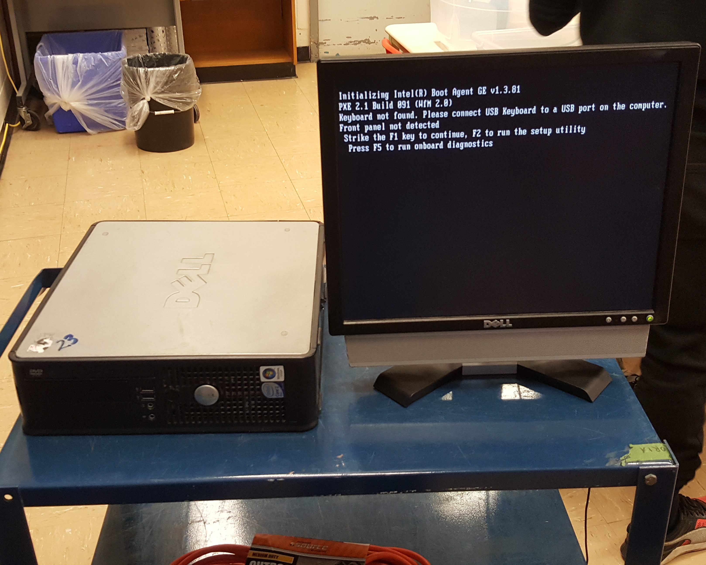
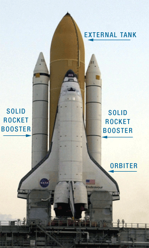
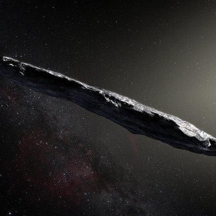
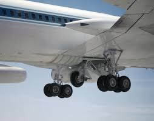
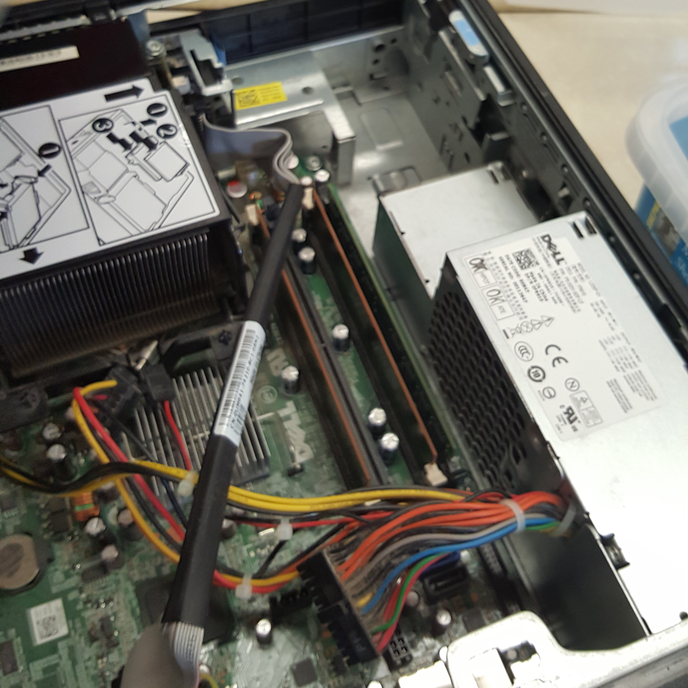
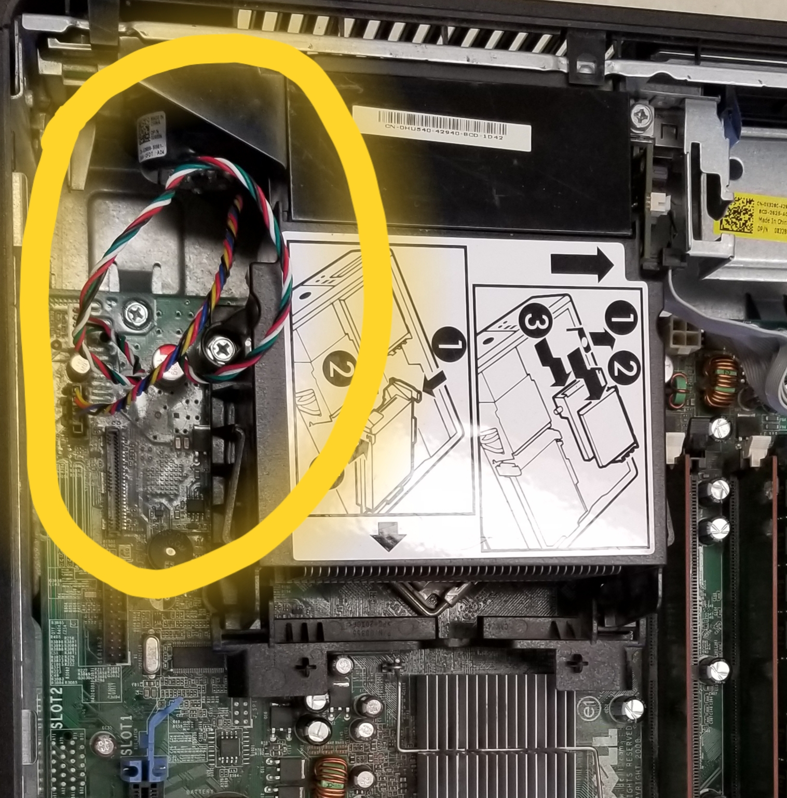
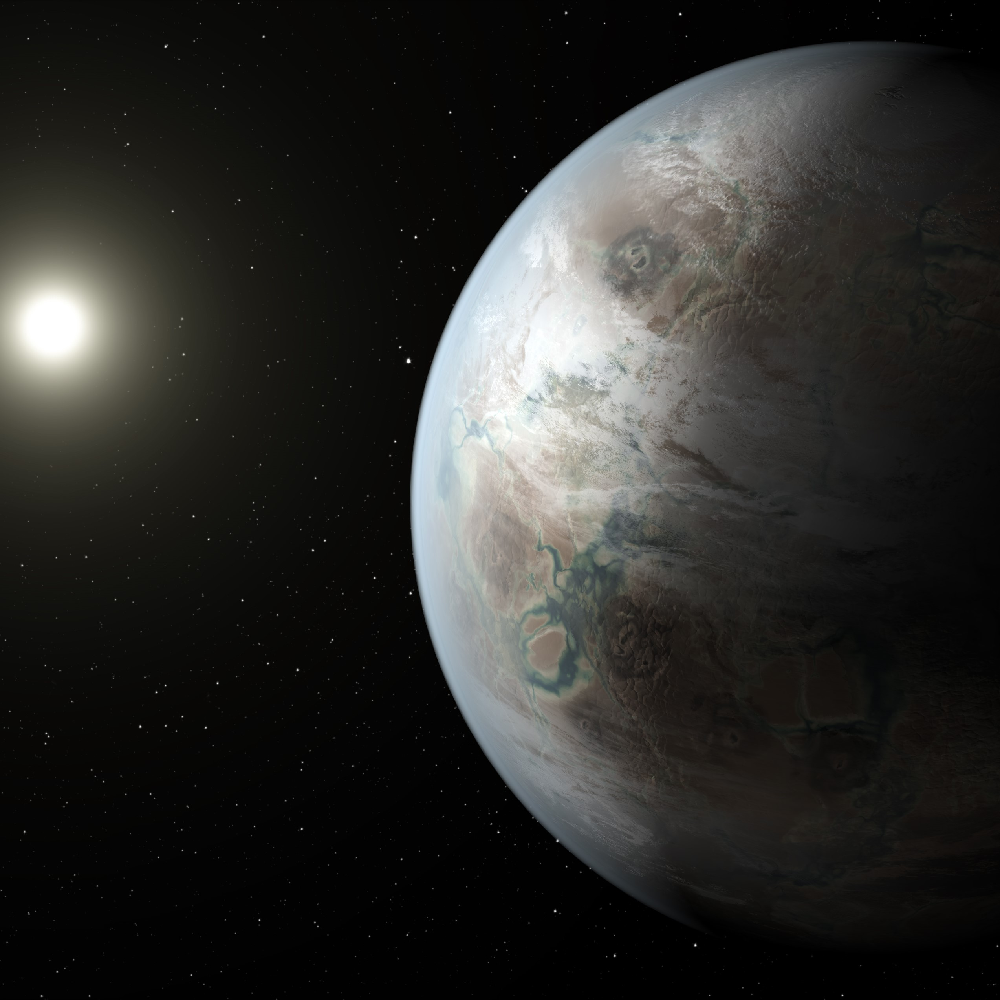

2009–05–30
|  |
| Dell Optiplex in the process of booting. |
I am preparing to go on a solo mission around the Earth in the FX-09 Space Shuttle. It is powered by the Dell Optiplex 760, one of the most technologically advanced computer system unit from this year. It sports an Intel Core Duo E8400 processor with 6MB of cache memory, with an included 2GB of DDR2 ram and an added extra 2GB of ram (primary storage). This system unit has Intel GMA X4500 integrated graphics and a 80GB hard drive (secondary storage) or storing important information and files about the space mission.
Let me summarize the importance and purpose of this remarkable space mission. The TX-09 is a revolutionary spacecraft which has the ability to travel faster than any other manned spacecraft ever before. In fact, if this works properly, this high-tech spacecraft should travel faster than the speed of light by a process of warping space. I won’t go into the specific details about the technology, but it is pretty remarkable!
Anyway, what am I going to do in this space mission? Well, if I’m successful, I would be the first human being from Earth to travel to Interstellar Space. It would be a great accomplishment!
-Cmdr. Safwan Khan, NASA
2009–05–31
|  |
| Image of FX-09 Space Shuttle |
I have been waiting years and years for this day to come. It's finally time to board the FX-09 Space Shuttle. I won’t be able to write in this journal during liftoff, but I will be able to write more after I enter space, during my free time.
For now, I’ll write more about today’s mission. It will take approximately 2 days to arrive at my final destination: Safwania is approximately 2 light years away from earth. That’s about 19 trillion kilometers away! It’s a difficult distance to grasp.
It has been 40 minutes past liftoff, and I am well on my way towards Safwania. My computer is part of a private network with mission control back on Earth, and I can communicate with them using instant messaging, although it will become less “instant” the further away I get from Earth. Maybe, I’ll get mission control to send me some media streams, or get them to send me replays of streams of Formula-1 racing, my favorite sport to watch! It’s amazing to see how far telecommunications have advanced since I was in elementary school, maybe 20 or 30 years ago.
Currently, I must take pictures of any strange or special occurrences in space. By the way, did you know that the average adult can grow up to 3% in height while in space?
-Cmdr. Safwan Khan, NASA
|  |
| Asteroid which I believe hit the shuttle. |
2009–06–01
I am en route to Safwania. All is going well, and according to my calculations, it should only take around another day to reach my final destination. I am currently in interstellar space, roughly half of the way to Safwania.
All systems appear to be in working order, and I have not been notified of any damages to the system unit of the ship, the Dell Optiplex 760, or any of its components. I did hear a large thud at the back end of the ship, near where the system unit is located, as I exited the Kuiper belt, on the outer edges of our solar system. As I said before, though, nothing appears to be going wrong, so the damage might just be superficial.
-Cmdr. Safwan Khan, NASA
2009–06–02
|  |
| Image of the shuttle's landing gear. |
I am almost at my destination, however there is a big issue. I was running tests on the landing gear, and I realized that they would not deploy, meaning that instead of a graceful landing on Safwania, I would barrel into atmosphere at upwards of 70 km/s. This would inevitably lead to my death, and the end of my legacy, cut short by technical difficulties. I have contacted mission control, and we are working together to try to solve this problem. However, we are very far from Earth and message transmissions are getting slower and slower. I am going to get back to work trying to solve this problem.
I think I may have figured out the problem. When I was exiting the Kuiper belt, the small asteroid that hit my ship must have damaged the system unit in some way. I could find no issues with the software controlling the landing gear, so there must be something wrong with the hardware. After consulting mission control, we have decided to go into orbit around Safwania, instead of directly landing on the planet right away. During this time we will have to work fast to troubleshoot the issue and fix it.
-Cmdr. Safwan Khan, NASA
|  |
| Beginning to take apart the system unit. |
2009–06–03
I’ve decided to attempt a tear-down of the system unit to try to fix whatever problem that asteroid has caused. It is risky, but it may be my only chance at landing safely on Safwania and completing my mission. I am currently in orbit around Safwania, however, I only have one to two days left of fuel to keep me there, so I must work fast. Late last night, mission control sent me a simplified user manual of the system unit (the Dell Optiplex 760), which should help me in my efforts to deconstruct and reconstruct it.
I will be documenting every part of the system unit that I take apart in my notebook, which is separate from this journal. I will write detailed descriptions of the various components in the system unit. Hopefully, this will be helpful to me in the future.
-Cmdr. Safwan Khan, NASA
|  |
| The ribbon cable which was unplugged. |
2009–06–04
I’ve found the problem! Somehow, two cables which connected the motherboard to the processor’s fan had been disconnected from their port. This caused the unit to overheat, making it malfunction. With the cables now plugged back in, hopefully the system unit will function normally, so I can make my graceful landing on Safwania. If my journal ends here, it means my ship’s computer was not repaired, and I will have died in my attempt to land on Safwania. I've notified mission control about the changes I've made and the potential danger I'm in, so even if this is the end for me, at least I would be able to give my final words before inevitably dying.
-Cmdr. Safwan Khan, NASA
|  |
| Satellite image of “Safwania” |
2009–06–05
I’ve landed in Safwania, the first person ever to land on another planet! The people of Safwania welcomed me warmly. It turns out that the Safwanian people bear striking similarities to those of Earth. They have Wi-Fi and their most prevalent sport is something quite similar to Formula 1, Concoction 2. I was able to contact mission control back on Earth to notify them of my arrival here, and I am scheduled to make my return trip in 6 months. My journal entries will resume then. Until then, this is Commander Safwan, signing off.
-Cmdr. Safwan Khan, NASA